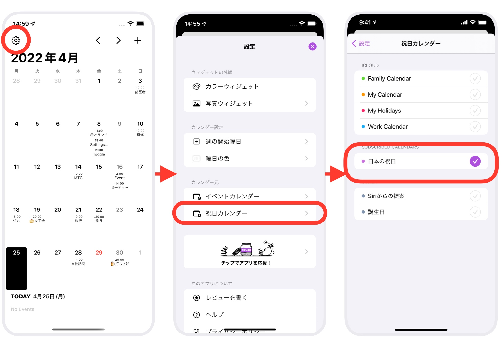

ヘルプ
祝日カレンダーとは
Ermineでは、イベント用カレンダーとは別に、祝日用のカレンダーを設定でき、祝日の日付を赤色に表示することができます。
設定するカレンダーは、端末に内蔵されている祝日カレンダーなどをご利用ください。カレンダーの名称は、地域によって変わります。日本の場合は「日本の祝日」になります。
個人的な休日を追加したいなど、祝日をご自分用にカスタマイズしたい場合は、別途、祝日用のカレンダーを作成して設定してください。カレンダーの作成はAppleのカレンダーアプリから行えます。
祝日カレンダー設定方法
祝日カレンダーの設定は、イベントカレンダーと同じ手順で行えます。
- Ermine
 を開く
を開く - 画面左上の歯車
 アイコンをタップ
アイコンをタップ - 設定画面で「祝日カレンダー」をタップ
- 祝日カレンダー画面で、利用したい祝日用のカレンダーを選択☑️してください（複数選択可）

祝日カレンダーの動き
- 予定が登録されている日付が赤色になります。
- アプリの月表示では、予定の名称は表示されません。下部には表示されます。
- 予定の追加はできません。
祝日カレンダーにも予定を追加をしたい場合は、新しいカレンダーを作成し、「祝日カレンダー」と「イベントカレンダー」の両方にそのカレンダーを設定してください。
イベントカレンダーと祝日カレンダーの設定による差
| 設定 | 結果 | |||
|---|---|---|---|---|
| イベント カレンダー | 祝日 カレンダー | アプリの月表示 | ウィジェットの表示 | 予定の追加 |
| -- |  |
できる | ||
| -- |  |
できない | ||
 |
できる | |||